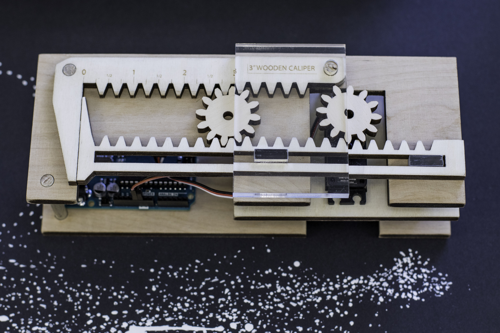
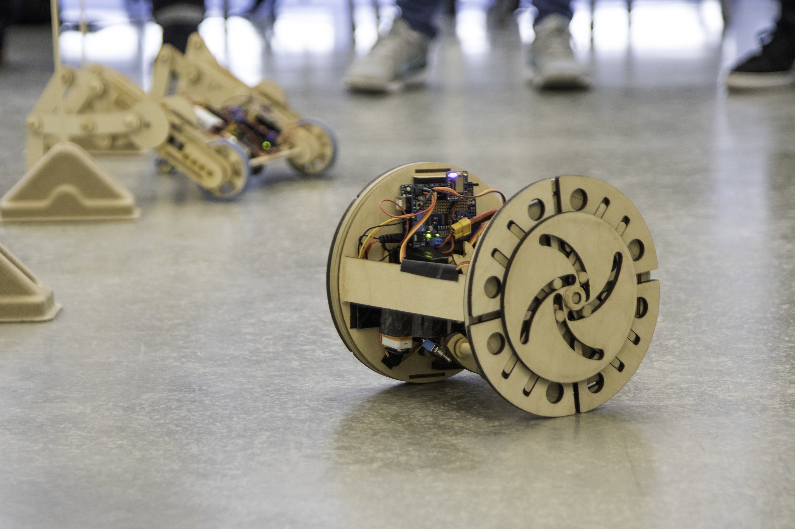
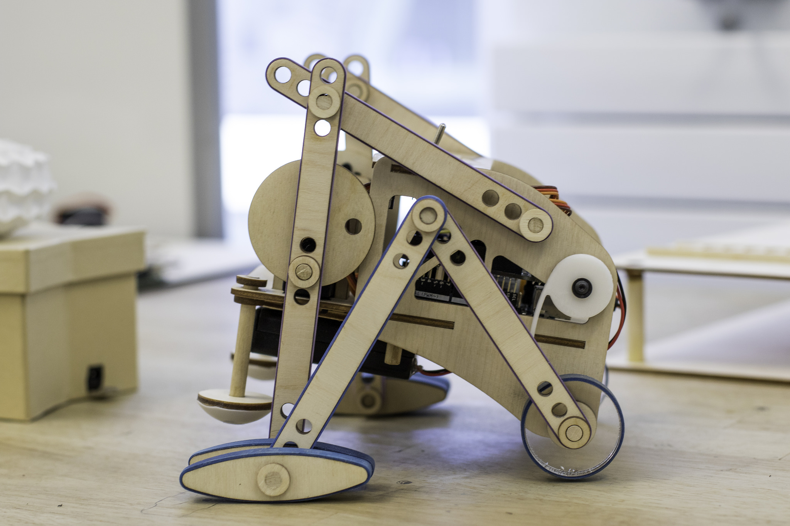

Design Innovation 22: Introduction to Prototyping and Fabrication
Teaching Assistant

Design Innovation 22 is an introductory course teaches design fundamentals required for future Design Innovation courses
Team
Mitchell Karchemsky
Christopher Myers
Michael Shiloh
My Role
Lead Lectures
Guide student work
Provide Critique
Assist in Grading
Methods
Prototyping
Itterative Design
Sketching
3D CAD
Electronics Design
The Course
Design Innovation 22 primarily serves as the fundamental foundation for students to have success in future Design Innovation Courses. With a heavy emphasis on creativity, iteration, and design, this course lays the groundwork to rapid prototype ideas with a combination of traditional and digital fabrication tools

Design Innovation 22 is a demanding course. The corpus of students leans more heavily towards first semester freshmen but will also attract upperclassmen due to the creative nature of the class. Class registration is heavily impacted every semester and the attracts a wide breadth of different majors, allowing for different ideas from different subject matters to be shared
Creativity
The course heavily draws upon students to think creatively; to think beyond the first cast and explore more profoundly the concepts of form and motion. In any university setting, and especially at UC Berkeley, where assignments are mostly designed to pass a “scantron” lookover, Des Inv 22 brings a more investigative light to making.
The first assignment that the students complete focuses on elegance and motion. They are required to create Origami and Kirigami and modify it such that it creates motion. This hybrid approach on the craft focused on two key elements: Traditional Craft and Electronic motion. Origami focused on the delicate nature of folding while still creating robust structures and figures. More than just a sculpture, a key component to the assignment was to introduce an element of motion to the model.

This assignment is just one example of the ingenuity required for the class.
Iteration

One of the core tenants of the course is to utilize both digital and traditional fabrication techniques to create iterative prototypes for rapid fabrication. For example, utilizing slots instead of fixed hole positions allows for teams to find the proper position without the need to create multiple static prototypes.
These skills are transferable and will help students lower production costs of future prototypes but more importantly, reduce headache when it comes to optimizing prototypes for final products.
Design
As stressed upon earlier, creativity is a core pillar of the class. We stress not only the manufacturing and production ideals to design but we also believe that a key piece of ingenuity is required for design:
Invokes Wonderment or Humor
All Projects must have a humorous element or invoke a sense of wonderment with the user/observer. People should say “wow”, “how does it work”, “how did they do that” or laugh or giggle upon seeing your project in final form.
Although a strange request, we purposely required this for students to think more of the assignment than just the rubric; for them to really believe that what they created would be interesting to themselves and to others. This leads to creative uses of mechanisms to create hypnotizing movements.
Of course, we stress the importance of product design as well. Specifically, we pull back on the reliance of digital media as a tool and to first work through traditional means. Too often, students will begin their design with the latest tools and technologies believing that the advanced nature of the application will solve their problem; this is not true. More often than not, students will start their design in digital tools and become water-logged on the idiosyncrasies that the system relies on.
Tools
The pillar which bolsters the course is prototyping: bringing ideas from concept to form. We wanted to prepare the students in a way which would give them the structure and foundation to design prototypes as opposed to a dichotomous key to design. For this we were very specifically tool agnostic, other than paper and pencil.
We start with sketching basics with paper and pencil. Creating rectilinear objects and visualizing ideas in physical context gives the visual-sensory feedback required to realize what their design should be. From there, we implore the students to create prototypes in low-cost materials to bring dimensionality to their idea. Only then do we recommend moving to the computer and prototype from a digital standpoint.
Maintaining our software-agnostic view, we do not teach specific software packages (e.g. Solidworks, Fusion360, Creo, etc.) but moreso the fundamental idea of bring three dimensional objects from two dimensional forms. We also harp on the notion that “digital fabrication can do anything.” Unfortunately, this is not true. 3D printing, and more specifically FDM, although incredibly powerful, has many limitations when it comes to strength and structure. We heavily stress the use of traditional techniques with a combination of 3d printing with the use of laser-cutting.

The tool that we are always delighted to work with is the Arduino platform. Electronics can be incredibly difficult especially to those with little to no experience. I had one student tell me the following:
If you told me a week ago that I can complete a project using electronics, playing around with parts like servo motors and LED lights, I’d be laughing like it as if it’s a joke, because as an Econ major, I was never good at physics, which is what I’d associate electronics with, and I have never even thought about the possibility that I can learn it in a sitting and even play around with it.
Electronics can be daunting if left to discrete components like ICs, resistors, oscillators, and LEDs. The Arduino platform allows us to build on a well established playground with easy to understand components that are incredibly powerful. For example, programming multiple RGB LEDs to work in tandem and be individually addressable is one of the more difficult tasks an aspiring student may want to complete, but will require intense wiring, programming, as well as wrangling discrete electronic components such as drivers and multiplexers. Yet with the Arduino platform and components such as the Adafruit Neopixel, the complex work can be as simple as one line of code.
Reflection
This class is one of my favorites to be a part of. It is incredibly rewarding to bring students into the world of product design through such a fun and rewarding course. Here are a several projects from the class
Teaching Experience
Courses and Mentorship

Critical Practices
Teaching Assistant
A hands-on, studio design course where students work at the intersection of technological innovation and socially engaged art.
Read Me
Design Innovation 22
Teaching Assistant
This introductory design course teaches concepts, skills, and methods required to design, prototype, and fabricate physical objects.
Read Me
Invention Lab
Technical Design Mentor
The Invention Lab is a UC Berkeley makerspace focused on helping students, researchers, and faculty to make embedded systems inventions.
Read Me
Case Studies
Selected Works

Bifröst
Better Embedded Systems Debugging
Berkeley Institute of Design. How do we better instrument embedded systems for combined software and hardware debugging?
Read Me
Dalmatian
How can we make firefighters safer?
Technology startup focused on creating a safer more effective workforce for firefighters through the use of on-person telemetry units.
Read Me
Within2
How do we create music we can feel?
Collaboration with Meyer Sound, The Berkeley Center for New Media, and Artist Tarek Atoui. How do we create music for the hearing impaired?
Read Me
MakerPass
Hardware and Industrial Design
The MakerPass Authentication system allows for Maker-spaces to grant access to privilaged members in a low-cost, easy to implement solution.
Read Me
Doom Sense
How can we feel information?
An experiment in haptic feedback modalities and sensory extension. We improved the performance of a player by delivering curated contextual information
Read Me
Drill Sergeant
Hardware and Industrial Design
Berkeley Institute of Design. Drill Sergeant enables new makers to build confidence through self-guided interactive physical feedback driven tutorials.
Read Me